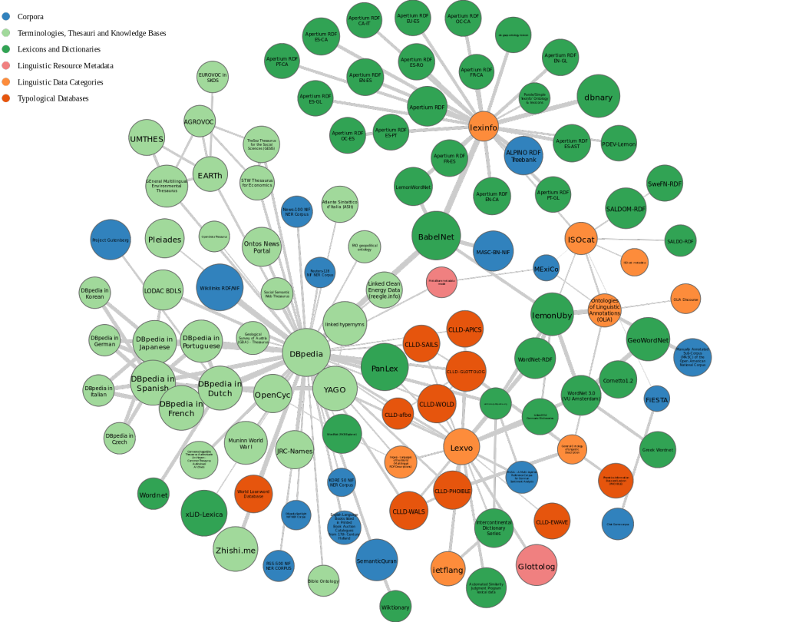

Open Linguistics
Open Linguistics Welcome to the home of the Open Knowledge Foundation’s Working Group on Open Data in Linguistics.
Our purpose is to:
- Promote the idea and definition, as specified in opendefinition.org of open data in Linguistics and in relation to language data.
- Act as a central point of reference and support for those interested in open linguistic data.
- Facilitate communication between researchers from different communities that use, distribute, or maintain open linguistic data.
- Serve as a mediator between providers and users of technical infrastructure.
- Build and maintain an index of open linguistic data sources and tools that link existing resources.
- Assemble best-practice guidelines and use cases concerning creating, using and distributing data.
- Gather information on legal issues surrounding linguistic data to the community.
The group collaborates together on various projects, for example the Linguistics Linked Open Data Cloud and with the LIDER project. Please explore our website, visit our wiki and sign-up to our mailing list in order to get involved!

The Linguistic Linked Data Cloud as of March 2015
Leave a Reply
You must be logged in to post a comment.